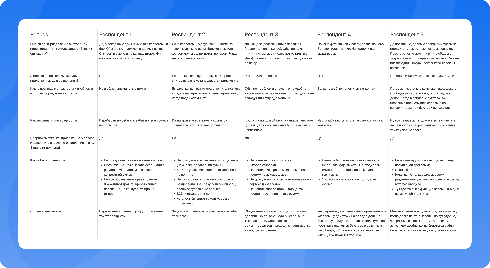
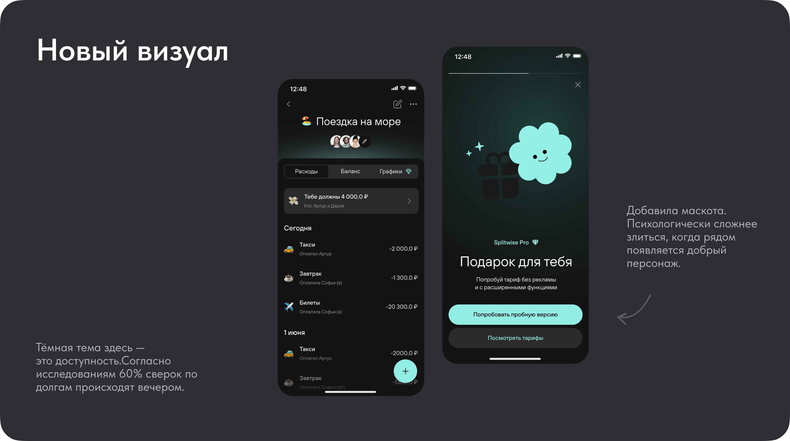
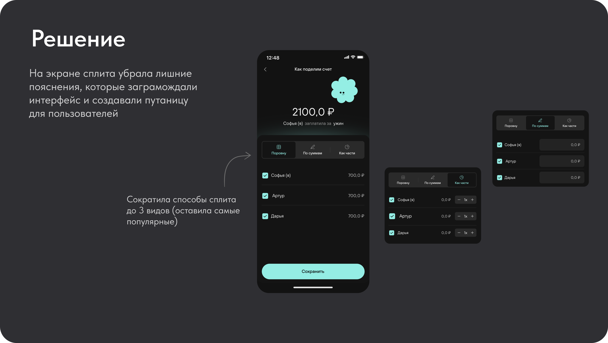
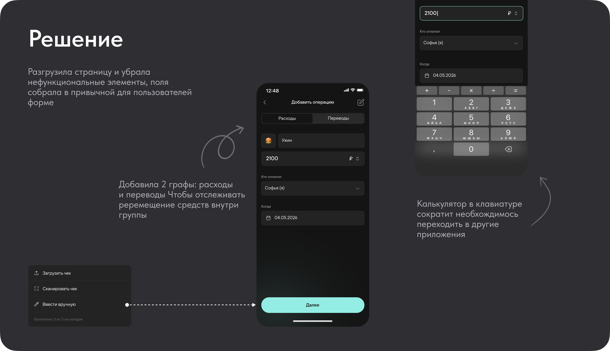
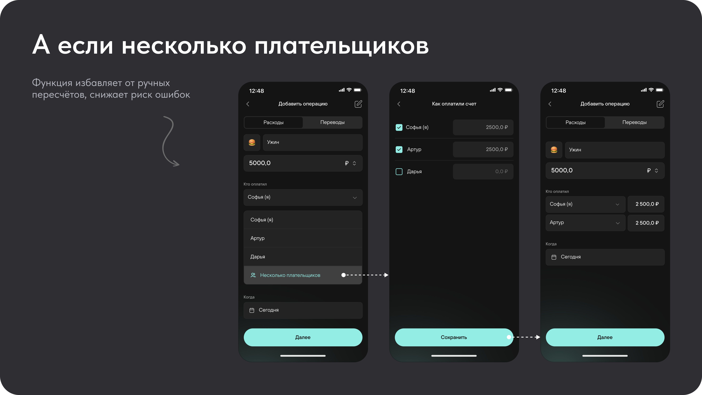
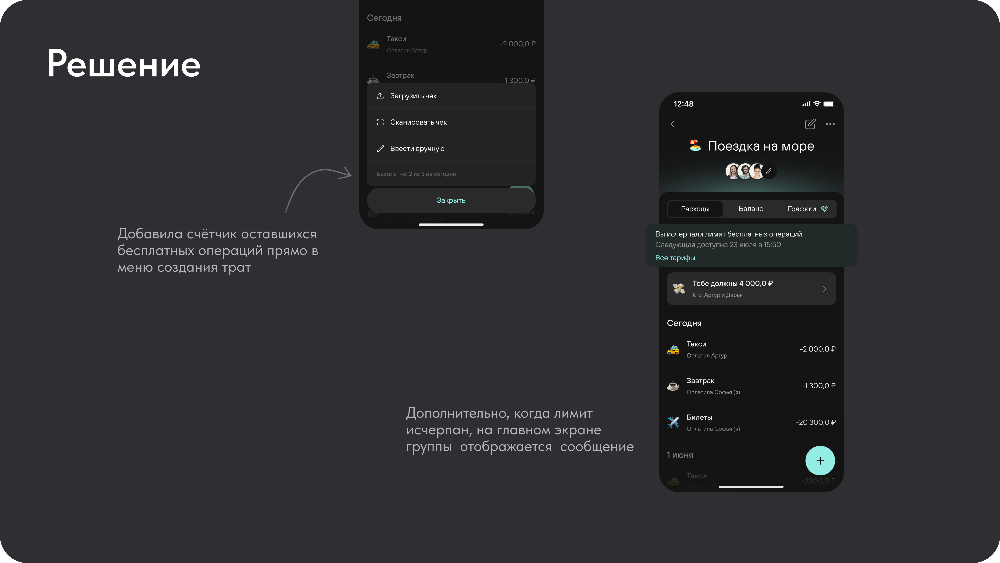
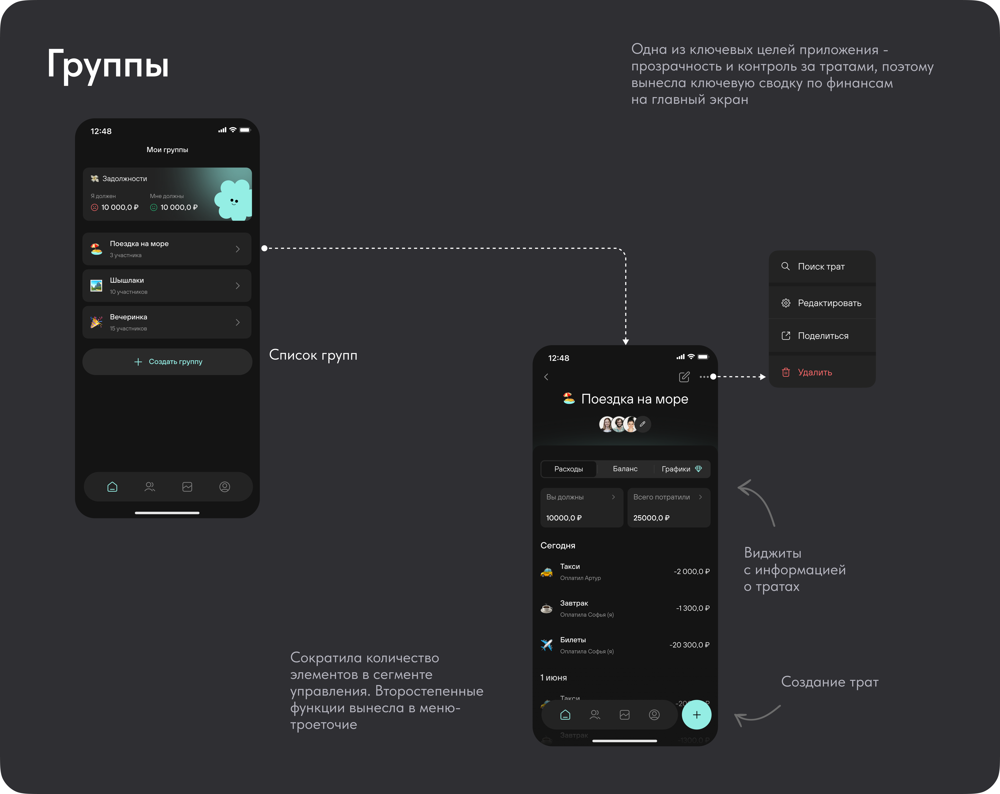
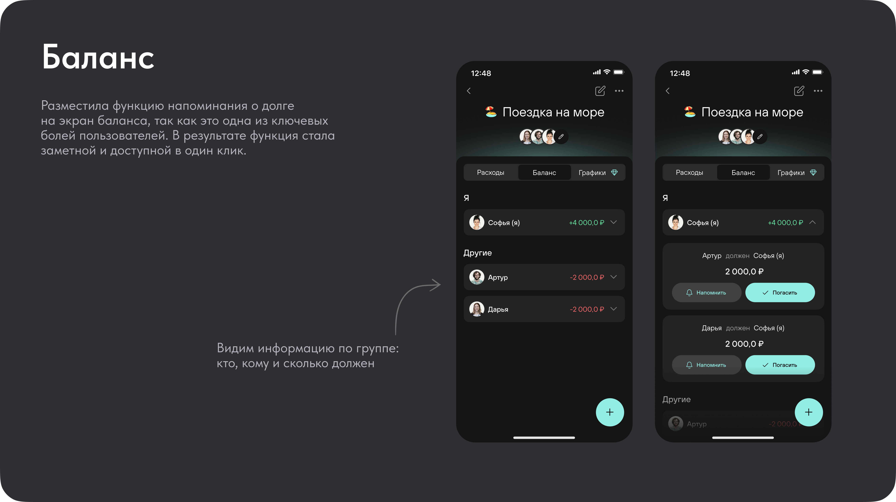
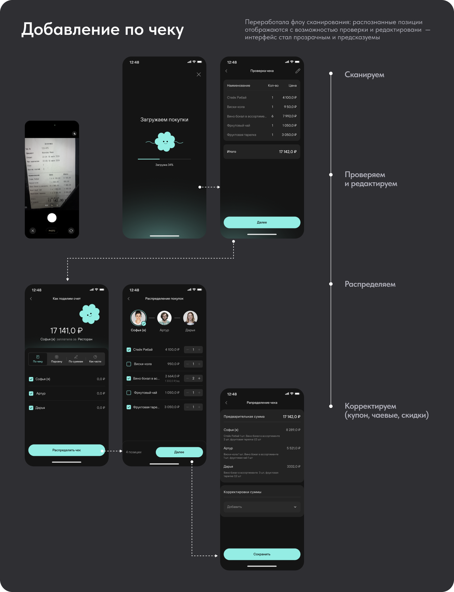

Splitwise
Улучшила сценарий разделения совместных трат

Контекст
Splitwise — это приложение для совместного учёта финансов. Оно создано, чтобы отслеживать общие расходы, делить счета и избавлять от неловких вопросов наподобие «кто кому сколько должен».
При добавлении совместного расхода пользователю нужно указать несколько связанных параметров: общую сумму, участников, плательщиков и способ разделения. В текущем сценарии эти действия требуют много переходов, а интерфейс меняется в зависимости от количества участников. Пользователю не всегда очевидно, как именно будет распределена сумма и чем один способ разделения отличается от другого. Некоторые обозначения могут запутывать и требуют дополнительных объяснений.
Для продукта важно успешное завершение ключевого сценария. Если пользователю сложно добавить расход или он не уверен в правильности расчёта, он может бросить сценарий и потерять доверие к сервису.
Упростить сценарий внесения расходов и их разделения между участниками в мобильном приложении Splitwise.
Аудит текущего решения
и поиск точек роста
Подробнее в Figma


Визуальный язык — плоский, местами неконсистентный и устаревший
Интерфейс перегружен, сложно ориентироваться
Очень много переходов, может можно сократить..
Непоследовательный сценарий ключевого действия
Интерфейс для 2 человек отличается от 3+
Исследования
- Провела бенчмаркинг-анализ решений конкурентов. Это позволило выделить лучшие практики и определить зоны для улучшения.
- Изучила открытые источники и пользовательские отзывы на тему совместных оплат у конкурентов. Анализ провела на основе данных Т-Банка, Compare the Market, UX-кейсов Splitwise и рыночных отчётов.
- Нужны гибкость и прозрачность: разные способы сплита, мультивалютность, контроль за долгами и тратами.
- Целевое действие (сплит) должно быть максимально простым и быстрым — без лишних переключений и ввода данных.
- Интерфейс должен быть предсказуемым, структурированным и вызывающим доверие.
- Нужна автоматизация и уменьшение количества переходов в другие приложения — например, встроенный калькулятор и интеграция с платёжными системами.

Интервью и UX-тесты
- Узнать в целом про опыт разделения совместных счетов.
- Увидеть, как пользователи проходят путь в приложении: что нравится, что не нравится, где узкие места.
- Был ли опыт разделения счетов? Как происходило, как скидывались?
- Какие были сложности, проблемы?
- Пользовались приложениями? Если да, то какими?
- Задание: в приложении Splitwise создать общую трату на 2–3 человек, например 5000 руб., и поделить на всех.
- Спросить обо всех ощущениях в приложении: что нравится, что не нравится, как воспринимаются обозначения.

Подход к редизайну
Находки аудита и исследования охватывали не отдельные баги, а системную проблему — интерфейс не поддерживал ключевую цель приложения: прозрачность и лёгкость совместных трат. Точечные правки не решили бы это полностью, поэтому редизайн начала не с отдельных экранов, а с пересборки визуальной основы, на которой держится всё остальное.

Проблема 1
Различия между способами деления не сразу считывались
- Способы деления счёта были представлены избыточно: декоративные иконки-персонажи, иконки и лишние пояснения на каждый вариант. Пользователи не могли на глаз определить назначение варианта и тратили время на расшифровку того, что должно считываться мгновенно.
- Обозначения способа ручного ввода суммы («1.23») пользователи путали с обозначением доли.
Гипотеза 1. Если заменить иконки на понятные текстовые названия, пользователь выберет нужный способ без расшифровки.
Гипотеза 2. Если убрать лишние описания и оставить только необходимое, пользователям станет проще сравнивать варианты между собой.
Гипотеза 3. Если сократить количество способов до самых используемых, пользователям станет проще выбирать нужную опцию.

Проблема 2
Основной сценарий добавления траты был перегружен
- Кнопки создания траты вручную и сканирования чека воспринимались как две разные, не связанные между собой функции, хотя вели к одному результату.
- При оплате счёта несколькими людьми не было нативной поддержки — пользователи вручную создавали отдельные траты и пересчитывали суммы, что повышало риск ошибки.
- Форма содержала нефункциональные и второстепенные элементы, отвлекающие от основного действия.
Гипотеза 1. Если объединить способы добавления в единую точку входа с меню, пользователь будет считывать их как альтернативы одного действия, а не отдельные функции.
Гипотеза 2. Если добавить поддержку нескольких плательщиков, то ручной пересчёт и риск ошибки исчезнут.
Гипотеза 3. Если разгрузить страницу и собрать форму с учётом привычных паттернов, ввод траты будет ощущаться быстрее и понятнее, снижая когнитивную нагрузку у пользователей.
Гипотеза 4. Если встроить калькулятор в клавиатуру, пользователю не придётся переключаться в другое приложение для расчётов — это уберёт лишний выход из флоу.


Проблема 3
Скрытый лимит бесплатных трат
- Дневной лимит бесплатных трат нигде не отображался заранее — блокировка с промо-экраном подписки появлялась внезапно, в момент попытки добавить трату, что ощущалось как неприятный сюрприз, а не понятное ограничение тарифа.
Гипотеза 1. Если показывать счётчик оставшихся трат заранее — до момента блокировки, пользователь будет понимать ограничение тарифа и не столкнётся с неожиданным прерыванием задачи.

Проблема 4
Интерфейс не снижает эмоциональную и когнитивную нагрузку при управлении долгами
- Пользователям психологически некомфортно напоминать другим о долге — это одна из ключевых эмоциональных болей в сценарии совместных трат.
- Проблемы с иерархией: финансовые показатели — ключевая ценность приложения — визуально не выделялись среди второстепенных элементов управления.
Гипотеза 1. Если сделать функцию напоминания о долге более заметной, понятной и удобной, пользователям будет проще решаться отправить напоминание, а эмоциональный дискомфорт при просьбе вернуть деньги снизится.
Гипотеза 2. Если визуально выделить ключевые финансовые показатели, пользователю будет проще быстро понять свою финансовую ситуацию и решить, что делать дальше.


Проблема 5
Непрозрачный процесс сканирования чека
- После сканирования чека результат распознавания не давал пользователю понятного пути проверки и правок.
- Не было видно прогресса при загрузке и обработке чека — не было ясно, сколько продлится загрузка.
Гипотеза 1. Если сделать весь путь от скана до распределения явным — с отдельным шагом проверки, редактирования и распределения по позициям между участниками — пользователь будет доверять результату и сможет исправить ошибки распознавания без путаницы.
Гипотеза 2. Если показать индикатор прогресса при обработке чека, пользователь будет уверен, что процесс идёт, и не станет прерывать его повторными действиями.

А что дальше?
- Тестируем новый интерфейс на пользователях.
- Оцениваем изменение метрик — ожидаем рост DAU, retention, завершаемости сценария добавления расхода, CSAT и снижение времени на выполнение задач.
- Собираем обратную связь — анализируем отзывы в поддержке и соцсетях, выявляем неочевидные проблемы.
- Исследуем следующие шаги. Планируем расширение функционала: например, интеграцию встроенного платежа.